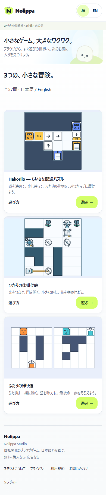
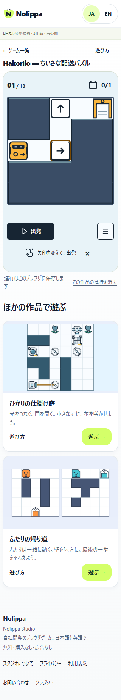

Nolippa / ノリッパ
Hakorilo / ハコリロ
2026-09-16 · 最新ローカルRCの名称差分。制作元ブランドはNolippa Studio。法人名・運営者の確定ではありません。
変更と保全
中央設定から一括反映
Header / Footer / カード / 詳細 / Play / ページmetadata / アクセシブル名を整合。日本語「ちいさな配送パズル」を保持し、許可された「Hakorilo — ちいさな配送パズル」を併記。他2作品は従来名です。
既存の色・形・レイアウトを保ち、RCのW文字だけNに変更。旧ロゴ・Baseline・実画面coversを保存しています。
旧URLと保存を継続
URLのtiny-deliveryを維持。内部ID・保存version・音設定キー・protocolは不変。保存の削除/移行は行っていません。
全57問・採用Art / Motion / 音・既存QAと比較動画はbyte一致。新名称は商標クリアランスや公開許可を意味しません。
今回の技術確認
| 対象 | 結果 |
|---|---|
| 型 / build | 0 errors / 0 warnings、RC28ページ |
| 名称QA | 4/4群 PASS：日英・全旧リンク・320/390/1440幅・3作品起動・保存/音継続 |
| 保全 | 14配布payload・1599旧source/証拠ファイル byte一致、57問 |
| 配布隔離 | 48ファイル / 内部11 URL 404 / 外部通信試行0 / 配布scan0候補 |
| Security既知2件 | 全projectの過去raw FAILを保持。SHA/TLSの限定判定を変更しない |
| 公開checker | BLOCKED（18項目）。名称選択は完了、権利承認は未完了 |
Windows / Edge headlessでの技術検証。実機・聴感・初見・Human全編受入には置き換えません。既存57問replay等は再利用し、比較動画は再生成していません。
統合報告・再現コマンド · 名称QA · 保全 · 配布監査 · 配布manifest · 公開blocker · 最終照合
公開前に残る確認
- ジョルダンが2014年に「乗換案内norippa（のりっぱ）」を発表していたことを公式発表で確認。現在の提供・商標・権利範囲は未確認。Nolippaを安全とも使用不可とも断定しません。Hakoriloも商標未確認です。
- domain、運営者、連絡先、対象市場・年齢、hosting/log/保持/同意。nolippa.comは照会候補のみで、取得済みではありません。
- 権利・法務・配信利用範囲・実機・初見・全57問Human全編受入・明示公開許可。
現在の実画面




英語Desktop · 日本語Desktop · 改名前RC Review（履歴・不変）


主担当・独立read-only reviewer：gpt-6-astra。stage / commit / push / deploy / LAN再公開 / 購入 / 契約 / 外部登録・問い合わせ送信は0。ローカル候補版で停止しています。